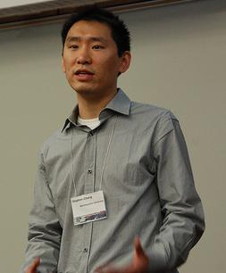

Stephen Chang
308 West Village H
PhD student |
 |
I'm interested in the use of lazy evaluation in programming, from theory to
language implementations.
I also hack on Racket.
Stepping Lazy Programs. With John Clements, Eli Barzilay, and Matthias Felleisen.
pre-print.
[
Abstract
| Paper
| arXiv
]
The Call-by-need Lambda Calculus, Revisited. With Matthias Felleisen.
22nd European Symposium on Programming (ESOP 2012), Tallinn, Estonia, March 2012.
[
Abstract
| Paper
| arXiv
]
From Stack Traces to Lazy Rewriting Sequences. With John Clements, Eli Barzilay, and Matthias Felleisen.
Symposium on Implementation and Application of Functional Languages (IFL 2011), Lawrence, Kansas, USA, October, 2011.
[
Extended Abstract
| Paper
| Slides
| arXiv
]
Evaluating Call By Need on the
Control Stack. With David Van Horn and Matthias
Felleisen.
Symposium on Trends in Functional Programming (TFP 2010), Norman, Oklahoma, May, 2010.
Best Student Paper award
[ Abstract
| Paper
| Slides
| arXiv
]
CS5010 (Spring 2010): Program Design Paradigms
CS5010 (Fall 2009): Program Design Paradigms